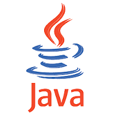

mentions légales | nous écrire | se connecter
Le langage Java est un langage de programmation informatique orienté objet créé par James Gosling et Patrick Naughton, employés de Sun Microsystems, avec le soutien de Bill Joy (cofondateur de Sun Microsystems en 1982), présenté officiellement le 23 mai 1995 au SunWorld. La société Sun a été ensuite rachetée en 2009 par la société Oracle qui détient et maintient désormais Java. La particularité et l'objectif central de Java est que les logiciels écrits dans ce langage doivent être très facilement portables sur plusieurs systèmes d’exploitation tels que UNIX, Windows, Mac OS ou GNU/Linux, avec peu ou pas de modifications. Pour cela, divers plateformes et frameworks associés visent à guider, sinon garantir, cette portabilité des applications développées en Java.
Le langage Java reprend en grande partie la syntaxe du langage C++, très utilisée par les informaticiens. Néanmoins, Java a été épuré des concepts les plus subtils du C++ et à la fois les plus déroutants, tels que les pointeurs et références, ou l’héritage multiple contourné par l’implémentation des interfaces. Les concepteurs ont privilégié l’approche orientée objet de sorte qu’en Java, tout est objet à l’exception des types primitifs (nombres entiers, nombres à virgule flottante, etc.). Java permet de développer des applications client-serveur. Côté client, les applets sont à l’origine de la notoriété du langage. C’est surtout côté serveur que Java s’est imposé dans le milieu de l’entreprise grâce aux servlets, le pendant serveur des applets, et plus récemment les JSP (JavaServer Pages) qui peuvent se substituer à PHP, ASP et ASP.NET.